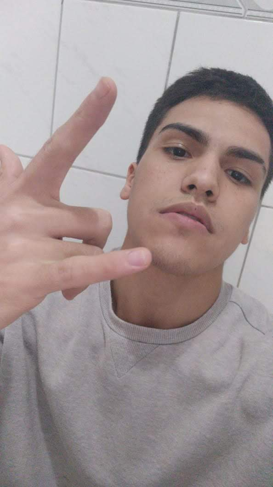
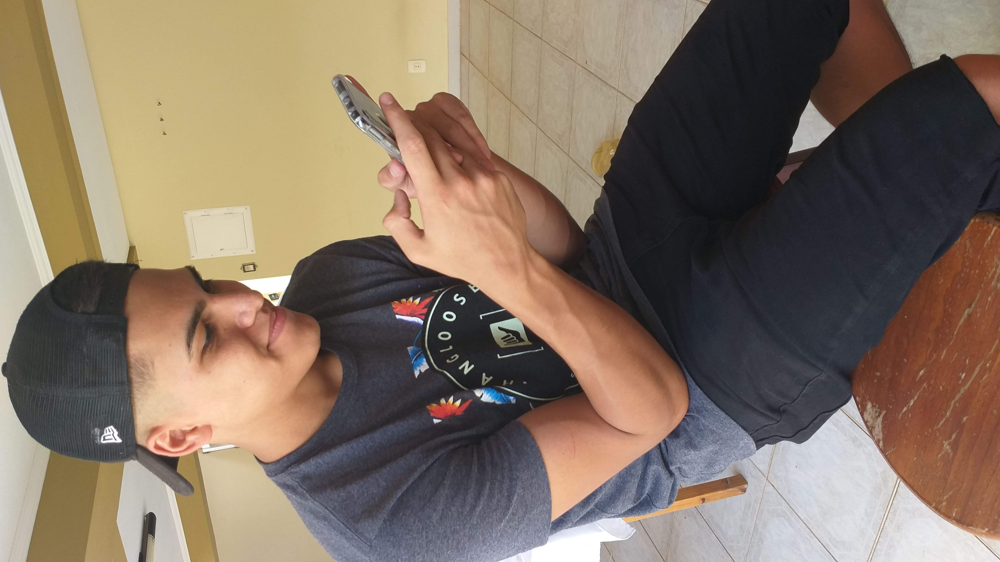

Victor Sampaio
vulgo vitãoSeja muito bem-vindo à pagina do membro Vitão, um dos membros iniciais e principais do grupo Canarinho Pistola, responsável por ser o principal membro em ser o braçal do grupo, em topar as grandes dificuldades do grupo.
 Vitão é responsável por ser da linha de frente do grupo, sempre que o grupo tem dificuldades em se comunicar com os membros de diretoria, Vitão era responsável por realizar essa conversa, e também seu nível de responsabilidade é incrível.
Além disso, também tem uma característica muito forte de realizar um incrível 'arco' de esquerda, seu físico o permite a forte movimentação no campo, logo sua posição na escalação do nosso time é segundo volante.
"Fazer parte dos Canários é divertido, esse grupo tem uma 'doença' que não tem explicação, todos os dias são doentis, dia ruim aqui passa longe; Esse grupo é alegre, não existe tempo ruim aqui"
- Víctor Henrique Sampaio
- Porto Feliz
- Solteiro
- Segundo Volante
- Production engineer
Perguntado sobre uma palavra que define o grupo, Vitão disse: "Alegria 😀" - o motivo é sempre que o grupo está feliz, ambos estão alegres, apesar de parecer que o dia vai ser ruim, esse grupo arranja um jeito de fazer o dia ficar alegre e divertido.